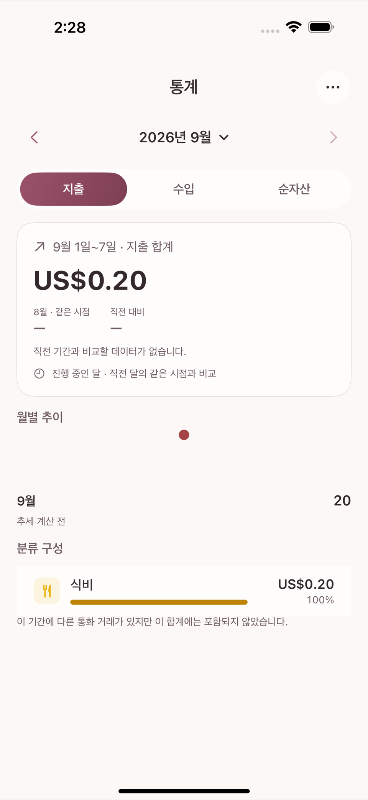

The Statistics tab switches between three perspectives — spending · income · net worth — using the segmented control at the top. Open Select Statistics Period from the top right (or the top bar) to change the period you are looking at (week, month, year, and so on).

The Reports screen holds four financial reports.
| Report | What it shows |
|---|---|
| Period Closing | The allocation, spending, and carryover results after a budget period ends |
| Classification Detail | Detailed spending and income by category |
| Budget Performance | Actual spending against the allocation, per budget group |
| Account Report | Balances and transaction flow, per account |
If you want to look deeper, Accounting Records in the Advanced Audit section shows the actual double-entry postings transaction by transaction. You do not need this screen day to day, but it is useful when you want to trace exactly how a figure was calculated.
All four report screens have the same period bar at the top — arrows move to the previous or next period, the month · quarter · year tabs change the unit, and if you use several currencies the currency menu sits on the same row.
To narrow things further, tap the filter icon in the top right to open a sheet. What you can choose there is transaction kind (expense, income, transfer, and so on), account (several asset, liability, income, or expense accounts at once), tag (if you have never used a tag, this item is not shown at all), and merchant (searched by exact name). There is no filter that narrows by category — if you want a per-category view, the "Classification Detail" report is itself that view.
Tap Export at the top of a report screen and choose Export as PDF or Export as CSV. PDF suits a summary meant to be read by a person; CSV suits reanalysis in a spreadsheet program.